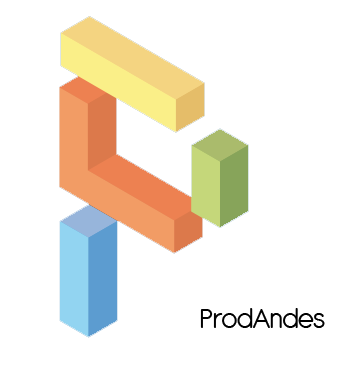

ProdAndes es una aplicación informática que apoya el proceso de control de producción de una empresa fabricante de productos, teniendo en cuenta sus proveedores, sus clientes, sus productos y los procesos de fabricación propios de cada uno de sus productos.
